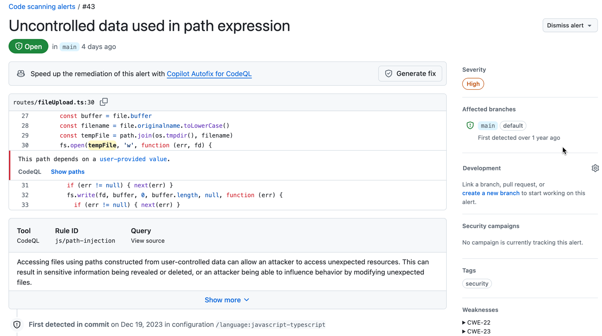
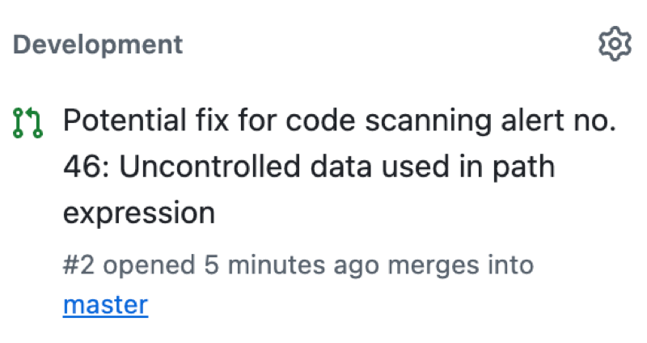
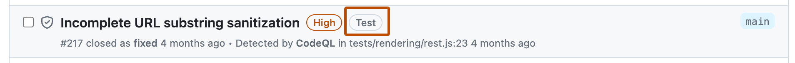
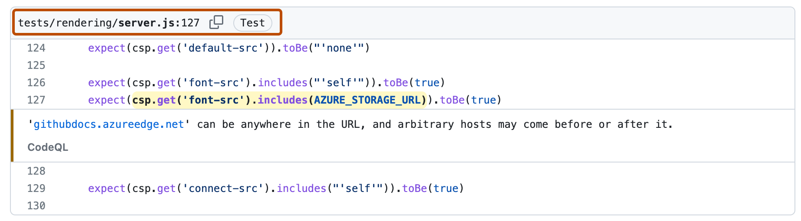

Learn about the different types of code scanning alerts and the information that helps you understand the problem each alert highlights.
You can configure code scanning to check the code in a repository using the default CodeQL analysis, a third-party analysis, or multiple types of analysis. When the analysis is complete, the resulting alerts are displayed alongside each other in the security view of the repository. Results from third-party tools or from custom queries may not include all of the properties that you see for alerts detected by GitHub's default CodeQL analysis. For more information, see Configuring default setup for code scanning and Configuring advanced setup for code scanning.
By default, code scanning analyzes your code periodically on the default branch and during pull requests. For information about managing alerts on a pull request, see Triaging code scanning alerts in pull requests.
You can use GitHub Copilot Autofix to generate fixes automatically for code scanning alerts, including CodeQL alerts. For more information, see Resolving code scanning alerts.
For code scanning alerts from CodeQL analysis, you can use security overview to see how CodeQL is performing in pull requests in repositories across your organization, and to identify repositories where you may need to take action. For more information, see CodeQL pull request alert metrics.
You can audit the actions taken in response to code scanning alerts using GitHub tools. For more information, see Auditing security alerts.
Each alert highlights a problem with the code and the name of the tool that identified it. You can see the line of code that triggered the alert, as well as properties of the alert, such as the alert severity, security severity, and the nature of the problem. Alerts also tell you when the issue was first introduced. For alerts identified by CodeQL analysis, you will also see information on how to fix the problem.
The status and details on the alert page only reflect the state of the alert on the default branch of the repository, even if the alert exists in other branches. You can see the status of the alert on non-default branches in the Affected branches section on the right-hand side of the alert page. If an alert doesn't exist in the default branch, the status of the alert will display as "in pull request" or "in branch" and will be colored grey. The Development section shows linked branches and pull requests that will fix the alert.

You can also view affected branches, as well as fixes and associated pull requests for an alert. This helps you and your team stay informed about the progress of fixing alerts.

If you configure code scanning using CodeQL, you can also find data-flow problems in your code. Data-flow analysis finds potential security issues in code, such as: using data insecurely, passing dangerous arguments to functions, and leaking sensitive information.
When code scanning reports data-flow alerts, GitHub shows you how data moves through the code. Code scanning allows you to identify the areas of your code that leak sensitive information, and that could be the entry point for attacks by malicious users.
To track remediation work in your team's workflow without leaving GitHub, you can link alerts to issues. See Linking code scanning alerts to GitHub issues.
You can run multiple configurations of code analysis on a repository, using different tools and targeting different languages or areas of the code. Each configuration of code scanning generates a unique set of alerts. For example, an alert generated using the default CodeQL analysis with GitHub Actions comes from a different configuration than an alert generated externally and uploaded via the code scanning API.
If you use multiple configurations to analyze a file, any problems detected by the same query are reported as alerts generated by multiple configurations. If an alert exists in more than one configuration, the number of configurations appears next to the branch name in the "Affected branches" section on the right-hand side of the alert page. To view the configurations for an alert, in the "Affected branches" section, click a branch. A "Configurations analyzing" modal appears with the names of each configuration generating the alert for that branch. Below each configuration, you can see when that configuration's alert was last updated.
An alert may display different statuses from different configurations. To update the alert statuses, re-run each out-of-date configuration. Alternatively, you can delete stale configurations from a branch to remove outdated alerts. For more information on deleting stale configurations and alerts, see Resolving code scanning alerts.
GitHub assigns a category label to alerts that are not found in application code. The label relates to the location of the alert.
Code scanning categorizes files by file path. You cannot manually categorize source files.
In this example, an alert is marked as in "Test" code in the code scanning alert list.

When you click through to see details for the alert, you can see that the file path is marked as "Test" code.

Note
Experimental alerts for code scanning were available a public preview release for JavaScript using experimental technology in the CodeQL action. This feature was retired. For more information, see CodeQL code scanning deprecates ML-powered alerts.
The severity level for a code scanning alert indicates how much risk the problem adds to your codebase.
Error, Warning, or Note.Critical, High, Medium, or Low.When an alert has a security severity level, code scanning displays and uses this level in preference to the severity. Security severity levels follow the industry-standard Common Vulnerability Scoring System (CVSS) that is also used for advisories in the GitHub Advisory Database. For more information, see CVSS: Qualitative Severity Rating Scale.
When a security query is added to the CodeQL Default or Extended query suite, the CodeQL engineering team calculates the security severity as follows.
Critical, High, Medium, or Low using the CVSS definitions.For more information, see CodeQL CWE coverage on the CodeQL documentation site.
Code scanning alerts can appear on pull requests as check results and annotations. This happens in repositories where code scanning either:
You will only see an alert in a pull request if all the lines of code identified by the alert exist in the pull request diff.
Depending on branch protection rules, the "Code scanning results" check may be a required check that prevents pull requests from being merged until it passes.